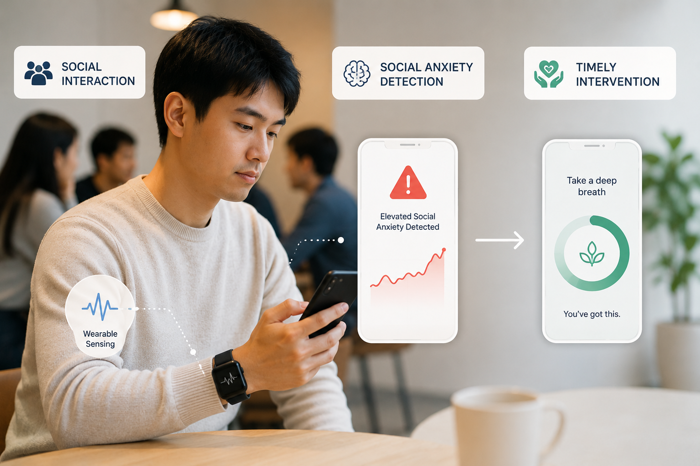

Context-Aware Micro-Interventions for Social Anxiety
NIMH R01We integrate mobile and wearable sensing with computational models of behavior and context to understand social anxiety in everyday life and deliver personalized interventions in moments of need.